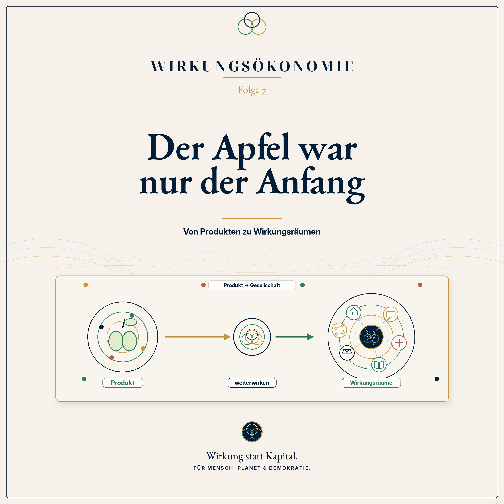

Podcast · Folge 7 · 23. Juni 2026 · 31:52
Der Apfel war nur der Anfang
Von Produkten zu Wirkungsräumen

 Wirkungsökonomie
Wirkungsökonomie
Podcast · Folge 7 · 23. Juni 2026 · 31:52
Von Produkten zu Wirkungsräumen

Anhören
Der Apfel war der Einstieg. Aber er war nie das ganze Thema.
In den ersten Folgen der Podcast-Reihe zur Wirkungsökonomie ging es um Preise, Kapital, Leistung, Absicht und Messung. Wir haben gefragt: Was erzählt ein Preisschild nicht? Warum ist Kapital ein schlechter Kompass? Warum ist nicht jede Bewegung echte Leistung? Warum ist Wirkung nicht dasselbe wie Absicht? Und wie kann man Wirkung sichtbar machen?
In Folge 7 machen wir den nächsten großen Schritt: Nicht nur Produkte wirken. Alles, was Zustände verändert, kann Wirkung erzeugen.
Eine Wohnung wirkt auf Sicherheit, Gesundheit und Teilhabe. Ein Satz wirkt auf Vertrauen, Angst oder Zugehörigkeit. Ein Gesetz wirkt auf Verhalten, Chancen und Verantwortung. Ein Algorithmus wirkt auf Aufmerksamkeit, Debatten und Demokratie. Ein Kapitalfluss wirkt auf ganze Branchen. Und auch Unterlassen wirkt, wenn dadurch Probleme größer werden.
Diese Folge führt die Begriffe Wirkungsträger, Wirkungsempfänger und Wirkungsraum ein. Denn Wirkung braucht immer eine Quelle, einen Ort und jemanden oder etwas, das betroffen ist. Ein Produkt kann Wirkungsträger sein. Aber genauso ein Medienbeitrag, eine politische Entscheidung, eine Schule, ein Krankenhaus, ein Mietvertrag, eine Plattform oder ein Unternehmen.
Damit wird klar: Die Wirkungsökonomie ist keine bessere Produktbewertung und keine Nachhaltigkeitsampel für den Supermarkt. Sie ist eine neue Art, Gesellschaft zu lesen.
Der Apfel war nur der Anfang. Jetzt geht es um die ganze Wirklichkeit: um Wohnen, Medien, Gesundheit, Bildung, Wissenschaft, Arbeit, Kapital, Demokratie und Resilienz.
Merksatz der Folge: Nicht nur Dinge wirken. Auch Räume, Regeln und Worte verändern die Welt.
Verknüpfungen
Transkript
Das Transkript macht die Folge auch als Text zugänglich und verknüpft zentrale Begriffe mit dem Glossar.
Stell dir bitte noch einmal den Supermarkt vor. Vor dir liegen zwei Äpfel. Beide rund. Beide frisch. Beide mit einem Preisschild. In Folge 1 haben wir genau dort angefangen.
Wir haben gefragt: Erzählt dieses Preisschild eigentlich die ganze Wahrheit? Erzählt es etwas über Wasser, Boden, Transport, Arbeit, Klima und Zukunft? Oder erzählt es nur, was an der Kasse bezahlt wird?
Und jetzt machen wir etwas Einfaches. Wir nehmen diese zwei Äpfel vom Supermarktregal und legen sie auf einen großen Tisch.
Und dann legen wir noch andere Dinge daneben.
Einen Wohnungsschlüssel. Eine Zeitung. Ein Smartphone. Ein Rezept aus der Arztpraxis. Ein Schulheft. Einen Rentenbescheid. Einen Gesetzestext. Eine Kreditentscheidung. Vielleicht auch einen Social-Media-Post.
Und dann stellen wir dieselbe Frage wie beim Apfel:
Was sieht man auf den ersten Blick? Und was wirkt darunter?
Denn der Apfel war nur der Anfang.
Wenn Wirkung die tatsächliche Veränderung von Zuständen ist, dann wirkt nicht nur ein Produkt. Dann wirkt eine Wohnung. Ein Satz. Ein Gesetz. Ein Algorithmus. Ein Krankenhaus. Eine Schule. Ein Kapitalfluss. Und manchmal wirkt sogar das, was wir nicht tun.
Darum geht es heute.
Wirkung ist kein Produktthema. Wirkung ist eine Gesellschaftsfrage.
Willkommen zur Podcast-Reihe Wirkungsökonomie. Mein Name ist Natalie Weber.
In dieser Reihe geht es um eine einfache, aber weitreichende Idee: Wir sollten Wirtschaft, Politik und Gesellschaft nicht länger zuerst nach Kapital, Gewinn, Wachstum oder Reichweite steuern, sondern nach Wirkung.
Nicht Kapital als Kompass. Sondern Wirkung. Für Mensch, Planet und Demokratie.
Heute sind wir bei Folge 7 angekommen. Und diese Folge ist eine besondere Folge. Sie ist eine Scharnierfolge.
Das heißt: Sie verbindet den ersten Teil der Reihe mit dem zweiten.
In den ersten Folgen haben wir den Maßstab vorbereitet. Wir haben geklärt, warum Preise blind sein können, warum Kapital als Kompass nicht reicht, warum nicht jede Bewegung echte Leistung ist, warum gute Absichten keine Wirkung garantieren und warum man Wirkung sichtbar machen muss, ohne so zu tun, als könne man die Welt perfekt berechnen.
Und in Folge 6 haben wir den Blick noch weiter aufgezogen: Wir haben über lange Transformationswellen gesprochen. Über Dampfmaschine, Eisenbahn, Elektrizität, Auto, Computer, Internet - und darüber, dass wir heute wieder an so einem großen Übergang stehen. Nachhaltigkeit, künstliche Intelligenz, Robotik, Gesundheit, Pflege und Resilienz verändern unsere Welt ohnehin.
Die Frage ist also nicht, ob Transformation kommt. Die Frage ist: Nach welchem Kompass läuft sie?
Und genau an diesem Punkt kommt heute der entscheidende Schritt:
Der Apfel war nur der Anfang.
Lass uns kurz die Treppe anschauen, auf der wir bisher nach oben gegangen sind.
In Folge 1 lagen zwei Äpfel nebeneinander. Wir haben gesehen: An der Kasse können zwei Dinge ähnlich aussehen. Aber ihre Wirkung kann völlig unterschiedlich sein. Der Preis sagt uns, was wir bezahlen. Aber nicht, wer sonst noch bezahlt.
In Folge 2 kam der Kompass dazu. Kapital ist ein mächtiges Werkzeug. Aber wenn Kapital selbst zum Kompass wird, zeigt es nur noch, wo Geld wächst. Es zeigt nicht, ob dabei Menschen gestärkt, Böden geschützt, Demokratien stabilisiert oder Zukunft gesichert wird.
In Folge 3 haben wir den Leistungsbegriff neu sortiert. Nicht alles, was sich bewegt, leistet etwas. In der Physik gibt es Scheinleistung, Blindleistung, Verlustleistung und Wirkleistung. Und in der Gesellschaft gibt es etwas ganz Ähnliches. Viel Aktivität kann wenig echte Veränderung erzeugen. Und manche leise Arbeit trägt das ganze System.
In Folge 4 haben wir dann die Wirkung selbst sauberer gefasst. Wirkung ist nicht Absicht. Nicht Image. Nicht Versprechen. Nicht Output. Wirkung ist das, was sich tatsächlich verändert. Und sie kann positiv, negativ oder neutral sein.
In Folge 5 haben wir gefragt: Wie misst man etwas, das man nicht sieht? Dort kamen WÖk-ID, Scorecard, Datenqualität, Datenlücken, Reverse Merit Order und Nichtkompensation ins Spiel. Also: Wie wird Wirkung sichtbar, ohne sie schönzurechnen?
Und Folge 6 hat den Zeithorizont geöffnet. Die Wirkungsökonomie ist kein schöner Zusatz für ruhige Zeiten. Sie ist eine Steuerungslogik für eine große Transformation, die längst läuft.
Heute kommt der nächste Schritt:
Wenn Wirkung echte Zustandsveränderung ist - dann müssen wir fragen: Wo entstehen solche Zustandsveränderungen überall?
Und die Antwort lautet: überall dort, wo Leben, Verhalten, Vertrauen, Gesundheit, Klima, Teilhabe, Wissen, Sicherheit oder Demokratie verändert werden.
Also nicht nur in Produkten.
Sondern in der gesamten Gesellschaft.
Der Apfel war ein guter Anfang, weil er einfach ist. Jeder kennt einen Apfel. Jeder kennt ein Preisschild. Jeder kennt den Moment im Supermarkt, in dem man entscheidet: Nehme ich den einen oder den anderen?
Aber genau hier lauert ein kleiner Denkfehler.
Weil wir beim Apfel angefangen haben, könnte man glauben: Wirkungsökonomie ist vor allem eine Sache für Produkte. Für Lebensmittel, Kleidung, Strom, Autos, Baustoffe, Smartphones. Also für Dinge, die man kaufen kann.
Das stimmt - aber es ist nur der Anfang.
Natürlich wirken Produkte. Ein T-Shirt trägt Wasserverbrauch, Chemie, Arbeitsbedingungen, Transportwege und Nutzungsdauer in sich. Ein Smartphone trägt Rohstoffe, Energie, Lieferketten, Reparierbarkeit und Datenthemen in sich. Eine Kilowattstunde Strom trägt einen Energiemix in sich. Ein Baustoff trägt CO2, Ressourcen, Gesundheit und Lebensdauer in sich.
Aber Produkte sind nur eine Art von Wirkungsträgern.
Ein Wirkungsträger ist einfach gesagt: etwas, das Wirkung auslösen kann.
Ein Produkt kann ein Wirkungsträger sein. Aber auch ein Gesetz. Eine Plattformregel. Ein Mietvertrag. Ein Kredit. Ein Algorithmus. Ein Schulcurriculum. Ein Krankenhausvergütungssystem. Eine Schlagzeile. Ein Förderprogramm. Eine Unterlassung.
Oder ganz einfach: eine Entscheidung.
Wenn wir Wirkung ernst nehmen, müssen wir also den Blick weiten.
Die Frage lautet nicht mehr nur: Was bewirkt dieses Produkt?
Die Frage lautet: Was bewirkt diese Ordnung? Diese Regel? Diese Sprache? Dieser Raum? Dieses Geschäftsmodell? Dieses Kapital?
Und damit sind wir nicht mehr im Supermarkt.
Wir sind in der Gesellschaft.
Jetzt kommen drei Begriffe, die ein bisschen technisch klingen, aber eigentlich sehr einfach sind.
Erstens: der Wirkungsträger.
Das ist das, wovon Wirkung ausgeht. Ein Apfel. Ein Gesetz. Eine Wohnung. Eine Talkshow. Ein Algorithmus. Ein Krankenhaus. Ein Unternehmen. Ein Kapitalfluss.
Zweitens: der Wirkungsempfänger.
Das ist derjenige oder dasjenige, worauf die Wirkung trifft. Menschen. Familien. Beschäftigte. Patientinnen. Schüler. Ökosysteme. Städte. Institutionen. Demokratien. Oder auch künftige Generationen, die heute noch gar nicht mit am Tisch sitzen.
Drittens: der Wirkungsraum.
Das ist der Raum, in dem Wirkung entsteht und sich ausbreitet. Der Markt. Die Schule. Das Krankenhaus. Das Internet. Der Wohnungsmarkt. Das Quartier. Die öffentliche Debatte. Der Staatshaushalt. Eine Lieferkette. Eine Familie. Eine Stadt.
Das klingt abstrakt. Also machen wir es greifbar.
Nehmen wir einen Wohnungsschlüssel.
Der Schlüssel ist nicht die Wohnung. Aber er steht für Zugang zu einem Wirkungsraum. Eine Wohnung wirkt auf Schlaf. Auf Gesundheit. Auf Sicherheit. Auf Kinder. Auf Beziehungen. Auf Stress. Auf die Frage, ob jemand am gesellschaftlichen Leben teilnehmen kann.
Nehmen wir eine Zeitungsschlagzeile.
Sie ist nur ein Satz. Aber ein Satz kann Aufmerksamkeit lenken. Er kann Vertrauen stärken oder schwächen. Er kann Angst verstärken oder Orientierung geben. Er kann nicht allein die Welt verändern - aber er kann einen Resonanzraum öffnen.
Nehmen wir ein Smartphone.
Es ist ein Gerät. Aber durch Apps, Plattformen und Algorithmen wird es zu einem Wirkungsraum. Es entscheidet mit, was wir sehen, was wir nicht sehen, worüber wir uns aufregen, wem wir vertrauen und womit wir unsere Zeit verbringen.
Nehmen wir ein Gesetz.
Ein Gesetz ist Papier. Aber dieses Papier verändert Verhalten. Es verändert Preise, Pflichten, Rechte, Sicherheit, Investitionen und manchmal auch das Vertrauen in den Staat.
Und plötzlich merken wir: Wirkung ist nicht an Dinge gebunden.
Wirkung ist an Zustandsveränderungen gebunden.
Fangen wir mit einem Beispiel an, das fast jeder sofort versteht: Wohnen.
Eine Wohnung wird heute oft in Quadratmetern beschrieben. Lage. Kaltmiete. Nebenkosten. Energieausweis. Zimmeranzahl. Balkon ja oder nein.
Das ist alles wichtig. Aber es ist nicht die ganze Wirkung.
Stell dir zwei Wohnungen vor.
Die erste Wohnung ist bezahlbar. Sie ist gut gedämmt. Sie liegt in einem Quartier mit Schule, Kita, Arztpraxis, öffentlichem Verkehr und ein paar Bäumen, die im Sommer Schatten geben. Die Miete frisst nicht das halbe Einkommen auf. Die Kinder können in der Nähe Freunde finden. Die Eltern schlafen besser. Die Heizkosten bleiben planbar.
Die zweite Wohnung ist eigentlich auch nur eine Wohnung. Aber sie ist teuer. Unsaniert. Laut. Schlecht angebunden. Im Sommer überhitzt sie. Im Winter sind die Heizkosten hoch. Die Familie muss an Essen, Freizeit, Bildung oder Gesundheit sparen. Vielleicht muss sie irgendwann umziehen, weg aus dem vertrauten Umfeld.
Beide Wohnungen haben Quadratmeter.
Aber sie wirken nicht gleich.
Die eine Wohnung produziert Stabilität. Die andere produziert Stress.
Und dieser Stress verschwindet nicht einfach. Er taucht später wieder auf. In Gesundheit. In Bildungschancen. In Nachbarschaften. In Vereinsamung. In politischem Misstrauen. In dem Gefühl: Ich strenge mich an, aber das System trägt mich nicht.
Darum ist Wohnen in der Wirkungsökonomie nicht nur ein Markt.
Wohnen ist ein Wirkungsraum.
Und ein Wohnungsmarkt, der nur Rendite misst, aber nicht Bezahlbarkeit, Gesundheit, soziale Stabilität, Energie, Quartier und Teilhabe, misst am falschen Maßstab.
Jetzt nehmen wir ein viel kleineres Ding: einen Satz.
Ein Satz wiegt nichts. Man kann ihn nicht in die Hand nehmen. Er steht nicht im Regal. Er hat keinen Barcode. Und trotzdem kann ein Satz Wirkungspotenzial haben.
Achtung: Hier ist die Präzision wichtig.
Ein Satz ist nicht automatisch Wirkung. Ein Satz löst nicht mechanisch eine bestimmte Handlung aus. Menschen sind keine Maschinen. Gesellschaften sind keine Automaten.
Aber Sprache kann Möglichkeitsräume verschieben.
Ein Satz kann ein Bild in den Kopf setzen. Er kann Menschen verbinden oder trennen. Er kann ein Problem sichtbar machen oder unsichtbar machen. Er kann Schuld zuweisen, ohne es offen zu sagen. Er kann Menschen entmenschlichen oder ihnen Würde geben.
Nehmen wir ein Beispiel.
Man kann über Menschen, die Schutz suchen, sehr unterschiedlich sprechen. Man kann sagen: "Menschen fliehen vor Krieg, Hunger oder Verfolgung." Man kann aber auch sagen: "Eine Welle rollt auf uns zu."
Im ersten Satz stehen Menschen im Mittelpunkt. Im zweiten Satz steht ein Naturereignis im Raum. Etwas Bedrohliches, das kommt, gegen das man sich schützen muss.
Beide Sätze können sich auf denselben Vorgang beziehen. Aber sie öffnen nicht denselben Resonanzraum.
Und genau deshalb sind Medien, Narrative und öffentliche Sprache in der Wirkungsökonomie nicht Beiwerk. Sie sind Teil der demokratischen Infrastruktur.
Denn Demokratie lebt davon, dass wir gemeinsam über Wirklichkeit sprechen können. Wenn Sprache nur noch Angst, Erregung oder Feindbilder verstärkt, dann verändert sich der Zustand der Demokratie.
Nicht von einem Satz allein.
Aber durch Wiederholung. Durch Reichweite. Durch Plattformlogik. Durch Tonalität. Durch Bilder. Durch das, was immer wieder sagbar wird.
Das schauen wir in der nächsten Folge genauer an.
Folge 8 heißt: Worte wirken.
Ein Gesetz klingt trocken. Paragrafen. Absätze. Verweise. Zuständigkeiten. Fristen.
Aber ein Gesetz ist nie nur Papier.
Ein Gesetz verändert, was sich lohnt. Was erlaubt ist. Was verboten ist. Was gefördert wird. Was kontrolliert wird. Was Menschen sich zutrauen. Was Unternehmen investieren. Was Verwaltungen prüfen. Was Gerichte entscheiden.
Nehmen wir ein Förderprogramm für energetische Sanierung.
Die Absicht kann gut sein: weniger Energieverbrauch, weniger CO2, bessere Wohnungen.
Aber jetzt kommt die Wirkungsfrage.
Wer kann den Antrag stellen? Wer versteht die Unterlagen? Wer hat Zeit? Wer hat Eigenkapital? Wer hat Zugang zu Beratung? Wer bekommt den Handwerker? Wer kann vorfinanzieren?
Wenn am Ende vor allem diejenigen profitieren, die ohnehin gut organisiert sind, dann kann eine gut gemeinte Maßnahme soziale Ungleichheit verstärken.
Das heißt nicht: Förderung ist schlecht.
Es heißt: Wir müssen ihre Wirkung prüfen.
Ein Gesetz wirkt nicht nur durch seinen Zweck. Es wirkt durch seine tatsächlichen Folgen.
Und manchmal wirkt ein Gesetz auch durch seine Nebenwirkungen: durch Bürokratie, durch Ausschlüsse, durch Verzögerungen, durch Schlupflöcher oder durch Unsicherheit.
In der Wirkungsökonomie wäre deshalb jede wichtige politische Maßnahme eine Wirkungsfrage:
Was soll sie verändern? Wen betrifft sie? Was könnte schiefgehen? Welche Daten zeigen, ob sie wirkt? Und wie lernen wir daraus?
Das ist keine Technokratie. Das ist gute politische Hygiene.
Wie Händewaschen für Gesetze.
Man macht es nicht, weil man perfekt ist. Man macht es, damit weniger Schaden entsteht.
Jetzt gehen wir in den digitalen Raum.
Ein Algorithmus hat keine Laune. Er sitzt nicht morgens am Frühstückstisch und denkt: Heute polarisiere ich mal ein bisschen.
Ein Algorithmus macht, wofür er gebaut wurde. Er sortiert. Er empfiehlt. Er bewertet. Er priorisiert. Er verstärkt.
Wenn ein Algorithmus darauf optimiert ist, möglichst viel Aufmerksamkeit zu erzeugen, dann lernt er oft sehr schnell, was Aufmerksamkeit erzeugt: Überraschung, Empörung, Angst, Konflikt, Zuspitzung, Zugehörigkeit, Gegnerbilder.
Nicht weil der Algorithmus böse ist.
Sondern weil sein Ziel falsch gesetzt ist.
Das ist ein klassisches Wirkungsproblem.
Der Output kann hervorragend sein: mehr Klicks, mehr Verweildauer, mehr Interaktion, mehr Werbeeinnahmen.
Aber die Wirkung kann problematisch sein: mehr Polarisierung, mehr Misstrauen, mehr Suchtmechanik, mehr Desinformation, mehr Stress.
Das gleiche gilt für Algorithmen in Bewerbungen, Krediten, Versicherungen, medizinischer Priorisierung oder öffentlicher Verwaltung.
Ein Algorithmus kann effizient sein und trotzdem ungerecht wirken.
Er kann schnell sein und trotzdem falsch verstärken.
Er kann objektiv aussehen und trotzdem alte Vorurteile fortschreiben, wenn die Daten, auf denen er lernt, bereits verzerrt sind.
Deshalb wird die Wirkungsökonomie später eine klare Grenze ziehen:
Wir brauchen Wirkungsdaten. Aber wir brauchen keine Überwachungsgesellschaft.
Wir brauchen bessere Rückmeldungen über Produkte, Strukturen, Regeln und Systeme. Aber wir bewerten nicht den Wert eines Menschen.
Das ist wichtig.
Wirkungsökonomie ist keine Personenbewertung. Kein Social Credit. Kein moralischer Punktestand für Bürgerinnen und Bürger.
Sie fragt: Welche Strukturen erzeugen welche Zustandsveränderungen? Und wie können wir diese Strukturen so verändern, dass positive Netto-Wirkung wahrscheinlicher wird?
Jetzt kommt ein Beispiel, das besonders wichtig ist, weil es oft unsichtbar bleibt: Kapital.
Kapital wirkt nicht erst, wenn jemand einen Tresor öffnet oder eine Überweisung ausführt.
Kapital wirkt durch Richtung.
Wenn ein Pensionsfonds in fossile Geschäftsmodelle investiert, wirkt dieses Geld. Wenn eine Bank einen Kredit für ein spekulatives Luxusprojekt gibt, wirkt dieses Geld. Wenn ein Fonds in Pflegeinfrastruktur, Kreislaufwirtschaft, saubere Energie oder bezahlbares Wohnen investiert, wirkt dieses Geld ebenfalls.
Kapital ist wie Wasser in einem Bewässerungssystem.
Es macht das, wohin die Kanäle es leiten.
Wenn es auf fruchtbare Felder fließt, kann es Leben stärken. Wenn es in die falsche Richtung läuft, kann es auch zerstören oder vertrocknen lassen, was eigentlich wachsen müsste.
Heute fragt Kapital oft zuerst: Wo ist die Rendite?
Die Wirkungsökonomie fragt: Welche Wirkung hat diese Rendite?
Das ist ein Unterschied.
Nicht jedes profitable Geschäftsmodell ist zukunftsfähig. Und nicht jede zukunftsfähige Wirkung bekommt heute Kapital.
Darum reicht es nicht, Produkte zu bewerten. Wir müssen auch Kapitalflüsse betrachten.
Denn Kapital ist kein neutraler Zuschauer der Gesellschaft.
Kapital ist ein Verstärker.
Es verstärkt entweder destruktive Strukturen oder konstruktive Lösungen.
Und genau deshalb kommt später eine eigene Folge dazu: Geld, das in die Zukunft zeigt. Dort sprechen wir über Wirkungskapital, T-SROI, Fonds, Rente und Versicherbarkeit.
Heute reicht der einfache Satz:
Auch Geld wirkt, bevor es ausgegeben wird - nämlich durch die Richtung, in die es fließt.
Bis hierhin haben wir über Dinge gesprochen, die passieren: kaufen, bauen, sagen, regeln, investieren, programmieren.
Aber es gibt noch eine Form von Wirkung, die besonders leicht übersehen wird.
Unterlassen.
Nicht handeln kann auch wirken.
Wenn eine Schule jahrelang nicht saniert wird, wirkt das.
Wenn eine Stadt Hitzeinseln ignoriert, wirkt das.
Wenn eine Plattform Hasskommentare nicht moderiert, wirkt das.
Wenn ein Unternehmen Kinderarbeit in der Lieferkette nicht prüft, wirkt das.
Wenn eine Regierung Flutrisiken kennt, aber keine Vorsorge trifft, wirkt das.
Wenn wir keine Daten erheben, wirkt das auch - denn dann bleibt ein Problem unsichtbar.
Unterlassen ist nicht immer schuldhaft. Manchmal fehlen Wissen, Geld, Zeit, Zuständigkeit oder politische Mehrheiten.
Aber wirkungslos ist Unterlassen nicht.
Das ist wichtig, weil viele Systeme so tun, als sei Nichtstun neutral.
Aber in einer vernetzten Welt ist Nichtstun oft eine Entscheidung, die den bisherigen Zustand stabilisiert.
Wenn der bisherige Zustand gut ist, kann das sinnvoll sein.
Wenn der bisherige Zustand aber Menschen krank macht, Klima destabilisiert, Bildungschancen blockiert oder Demokratie schwächt, dann wirkt Nichtstun negativ.
Die Wirkungsökonomie fragt deshalb nicht nur:
Was tun wir?
Sondern auch:
Was passiert, wenn wir nichts tun?
Das klingt streng. Aber eigentlich ist es nur ehrlich.
An dieser Stelle kann ein Einwand entstehen.
Vielleicht denkst du: Wenn jetzt alles wirkt, wird dann auch alles bewertet? Jede Entscheidung? Jeder Satz? Jeder Einkauf? Jeder Mensch?
Das wäre ein gefährlicher Gedanke. Und genau deshalb ist die Grenze wichtig.
Die Wirkungsökonomie bewertet nicht den Wert eines Menschen.
Ein Mensch ist kein Score.
Ein Mensch ist kein Produkt.
Ein Mensch ist nicht weniger wert, weil er etwas kauft, das eine schlechte Wirkung hat, oder weil er in einem System lebt, das ihm keine besseren Möglichkeiten gibt.
Die Wirkungsökonomie interessiert sich nicht für moralische Überwachung von Personen.
Sie interessiert sich für Strukturen.
Für Preise. Für Produkte. Für Lieferketten. Für Regeln. Für Kapitalflüsse. Für öffentliche Mittel. Für digitale Verstärkungslogiken. Für Institutionen.
Warum?
Weil der einzelne Mensch nicht jeden Tag die Welt reparieren kann.
Wenn das fair produzierte Produkt doppelt so teuer ist, der Bus nicht fährt, die Wohnung unbezahlbar ist, die Pflege überlastet ist, die Schule kaputt ist und die sozialen Medien Erregung belohnen, dann hilft es wenig, den Menschen zu sagen: Entscheidet euch doch einfach besser.
Das ist moralisch bequem, aber systemisch schwach.
Die Wirkungsökonomie will nicht den perfekten Konsumenten erziehen.
Sie will ein System bauen, in dem bessere Wirkung leichter, sichtbarer und bezahlbarer wird.
Das ist der Unterschied.
Nicht Menschen sollen ständig gegen falsche Anreize kämpfen müssen.
Die Anreize selbst müssen besser werden.
Kehren wir noch einmal zu unserem Tisch vom Anfang zurück.
Dort liegen nicht mehr nur zwei Äpfel.
Dort liegt ein Wohnungsschlüssel. Er steht für Wohnen, Mieten, Quartier und Stabilität.
Dort liegt eine Zeitung. Sie steht für Medien, Öffentlichkeit, Narrative und Demokratie.
Dort liegt ein Smartphone. Es steht für digitale Räume, Algorithmen, Aufmerksamkeit und Daten.
Dort liegt ein Rezept aus der Arztpraxis. Es steht für Gesundheit, Pflege, Prävention und die Frage, ob ein System an Heilung oder an Krankheit verdient.
Dort liegt ein Schulheft. Es steht für Bildung, Wissenschaft, Wahrheit, Zukunftskompetenz und die Fähigkeit einer Gesellschaft, sich selbst zu korrigieren.
Dort liegt ein Rentenbescheid. Er steht für Arbeit, Einkommen, Lebensleistung, Care, Maschinen und Generationengerechtigkeit.
Dort liegt ein Kontoauszug oder ein Fondsbericht. Er steht für Kapital, T-SROI, Rente, Versicherbarkeit und die Frage, ob Geld Zukunft stärkt oder Zukunft verbraucht.
Dort liegt ein Gesetzestext. Er steht für den Staat, der nicht alles planen muss, aber die richtigen Rückkopplungen bauen kann.
Und plötzlich sieht man:
Die Wirkungsökonomie ist kein zusätzliches Etikett auf Produkten.
Sie ist eine neue Art, diese Gegenstände miteinander zu lesen.
Denn sie alle hängen zusammen.
Eine teure Wohnung wirkt auf Gesundheit. Gesundheit wirkt auf Arbeit. Arbeit wirkt auf Einkommen. Einkommen wirkt auf Teilhabe. Teilhabe wirkt auf Vertrauen. Vertrauen wirkt auf Demokratie. Demokratie wirkt darauf, ob Klimaschutz, Bildung, Pflege oder Digitalisierung überhaupt gemeinsam gestaltet werden können.
Eine Schlagzeile kann die Debatte über Migration verändern. Diese Debatte kann politischen Druck erzeugen. Politischer Druck kann Gesetze verändern. Gesetze verändern Wohnraum, Arbeit, Integration, Sicherheit und Zugehörigkeit.
Ein Algorithmus kann Aufmerksamkeit in Richtung Erregung lenken. Erregung kann Vertrauen schwächen. Schwaches Vertrauen kann öffentliche Maßnahmen blockieren. Blockierte Maßnahmen können Krisen verschärfen.
Das ist kein Themenkatalog.
Das ist ein Wirkungsnetz.
Wenn Wirkung eine Gesellschaftsfrage ist, verändert sich auch die Rolle des Staates.
Der Staat muss nicht alles zentral planen.
Das wäre tatsächlich Planwirtschaft. Und das ist nicht die Idee der Wirkungsökonomie.
Die Idee ist eine andere.
Der Staat setzt den Rahmen, in dem der Markt bessere Signale bekommt. Er sorgt dafür, dass Preise mehr Wahrheit tragen. Er sorgt dafür, dass öffentliche Gelder nicht blind ausgegeben werden. Er sorgt dafür, dass Daten vergleichbar, prüfbar und geschützt sind. Er sorgt dafür, dass Schäden nicht einfach der Allgemeinheit zugeschoben werden.
Der Staat wird damit nicht zum allwissenden Lenker.
Er wird zum Rückkopplungsarchitekten.
Ein Thermostat ist dafür ein gutes Bild.
Ein Thermostat bestimmt nicht, wie jeder Mensch im Raum sitzen soll. Es misst Temperatur und gibt Rückmeldung an die Heizung. Wenn es kalt wird, wird gegengesteuert. Wenn es warm genug ist, nicht.
Ein gutes gesellschaftliches System braucht ähnliche Rückmeldungen.
Wenn ein Produkt Schäden auslagert, muss das im Preis sichtbar werden.
Wenn ein Stadtteil überhitzt, muss das in Planung und Haushalt sichtbar werden.
Wenn ein Krankenhaus Prävention vernachlässigt, muss das im Finanzierungssystem sichtbar werden.
Wenn Medienlogiken Desinformation belohnen, muss das als demokratisches Risiko sichtbar werden.
Wenn Bildung Zukunftsfähigkeit erzeugt, darf sie nicht nur als Kostenblock erscheinen.
Und wenn Pflege das System stabilisiert, darf sie nicht so behandelt werden, als sei sie nur eine Ausgabe.
Das ist der politische Kern:
Wirkung muss zurückwirken.
In Preise. In Steuern. In Beschaffung. In Haushalte. In Kapital. In Regeln. In Management. In öffentliche Debatten.
Sonst bleibt sie ein Bericht.
Und ein Bericht allein verändert noch kein System.
Damit ist klar, warum diese Folge genau hier steht.
Die ersten sechs Folgen haben die Grundlagen gelegt.
Jetzt kommt Teil II der Reihe: Alles wirkt.
Und dieser Teil wird keine lose Sammlung von Spezialthemen.
Es geht nicht darum, mal über Medien zu sprechen, dann über Wohnen, dann über Gesundheit, dann über Bildung, dann über Einkommen und dann über Kapital, weil das alles irgendwie auch wichtig ist.
Nein.
Diese Felder sind die großen Wirkungsräume unserer Gesellschaft.
In Folge 8 sprechen wir über Worte, Medien, Narrative und Demokratie. Wir fragen: Was macht Sprache mit einer Gesellschaft? Wann ist Reichweite Scheinleistung? Wie wirken Frames? Und warum ist Öffentlichkeit kein Marktplatz wie jeder andere?
In Folge 9 sprechen wir über Zuhause. Über Mieten, Wohnungen, Quartiere, Gesundheit, Integration und soziale Stabilität.
In Folge 10 geht es um Gesundheit. Warum bezahlen wir so oft Behandlung, aber nicht Gesundheit? Warum lohnt sich Prävention zu wenig? Und warum ist Pflege eine der größten Wirkleistungen unserer Gesellschaft?
In Folge 11 geht es um Wissen. Bildung, Wissenschaft und Wahrheit als Infrastruktur. Denn eine Gesellschaft, die ihr Wissen schwächt, verliert die Fähigkeit, sich selbst zu korrigieren.
In Folge 12 sprechen wir über Einkommen. Wenn Maschinen und KI immer mehr Arbeit übernehmen, wofür entlohnen wir Menschen dann? Und wie machen wir Care, Bildung, Pflege, Gemeinwesen, Demokratiearbeit und ökologische Regeneration sichtbar?
In Folge 13 geht es um Geld, das in die Zukunft zeigt. Kapital, T-SROI, Fonds, Rente und Versicherbarkeit.
Und Folge 14 führt alles zusammen: Eine Architektur, kein Flickenteppich.
Das ist der Weg.
Vom Apfel zur Gesellschaft.
Vom Produkt zum Wirkungsraum.
Vom Preisschild zur neuen Ordnung des Wohlstands.
Bevor wir zum Ende kommen, möchte ich dir einen einfachen Test mitgeben.
Du kannst ihn auf fast alles anwenden.
Nimm irgendeine Sache aus deinem Alltag und frage nicht zuerst: Was kostet sie? Wer hat sie gemacht? Wie sieht sie aus? Was verspricht sie?
Frag stattdessen:
Was verändert sich dadurch?
Wenn ich diese App nutze: Was verändert sie an meiner Aufmerksamkeit?
Wenn ich diese Nachricht lese: Was verändert sie an meinem Bild von anderen Menschen?
Wenn diese Wohnung gebaut wird: Was verändert sie im Quartier?
Wenn diese Schule so finanziert wird: Was verändert das für Kinder?
Wenn dieses Krankenhaus so vergütet wird: Was verändert sich für Gesundheit?
Wenn dieses Geld dort investiert wird: Was verändert es in der Zukunft?
Wenn dieses Gesetz beschlossen wird: Wer wird stärker, wer wird schwächer, was wird leichter, was wird schwerer?
Diese Frage ist klein, aber sie verändert den Blick.
Was verändert sich dadurch?
Das ist die Grundfrage der Wirkungsökonomie.
Nicht: Was sieht gut aus?
Nicht: Was war gut gemeint?
Nicht: Was bringt kurzfristig Gewinn?
Sondern: Welche Zustände verändern sich wirklich - und in welche Richtung?
Der Apfel war nur der Anfang.
Er war unser Einstieg, weil er einfach ist.
Zwei Äpfel. Ein Preis. Unterschiedliche Wirkung.
Aber jetzt sehen wir: Dieselbe Logik gilt überall.
Eine Wohnung kann Stabilität erzeugen oder Stress.
Ein Satz kann Orientierung geben oder Angst verstärken.
Ein Algorithmus kann informieren oder polarisieren.
Ein Gesetz kann helfen oder ausschließen.
Ein Krankenhaus kann Gesundheit erzeugen oder Krankheit verwalten.
Eine Schule kann Menschen stärken oder aussortieren.
Ein Kapitalfluss kann Zukunft finanzieren oder Zukunft verbrauchen.
Und ein Unterlassen kann ebenso wirken wie eine Handlung.
Wirkung ist also kein Produktthema.
Wirkung ist eine Gesellschaftsfrage.
Und wenn das stimmt, dann müssen wir die großen Räume anschauen, in denen Gesellschaft entsteht:
Öffentlichkeit. Wohnen. Gesundheit. Wissen. Arbeit. Kapital. Staat. Demokratie.
Genau das tun wir ab der nächsten Folge.
Folge 8 heißt: Worte wirken.
Wir sprechen darüber, warum Sprache kein Beiwerk der Demokratie ist, sondern ihre Infrastruktur. Warum Reichweite nicht Wahrheit ist. Warum Narrative Wirkungsräume öffnen. Und warum eine Gesellschaft, die nicht mehr gemeinsam über Wirklichkeit sprechen kann, auch nicht mehr gemeinsam handeln kann.
Für heute bleibt der Satz:
Der Apfel war nur der Anfang. In Wahrheit wirkt alles, was Zustände verändert.
Danke, dass du zugehört hast.
Bis zur nächsten Folge der Wirkungsökonomie.